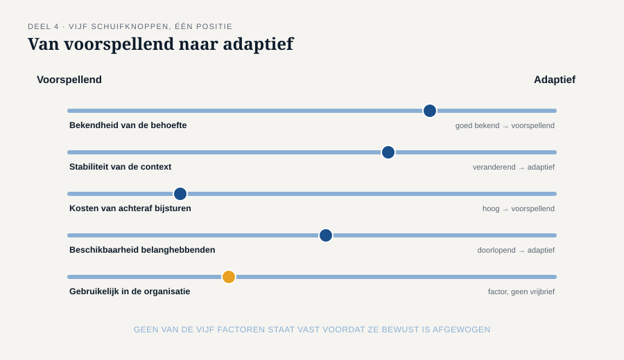
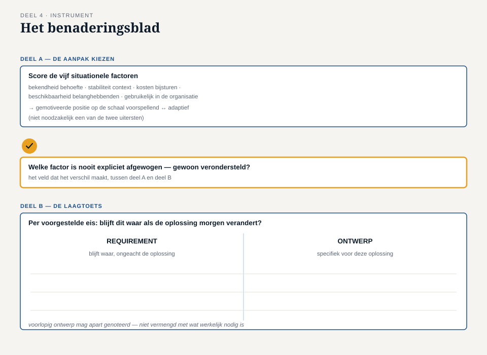

Deel 4 — Rollen en benaderingen; requirements versus ontwerp
Reader · Ductus-cursus Business-analyse · niveau 1 (fundament) · deel 4 van 30
4.1 Waar dit deel over gaat
De eerste drie delen gaven je een instrument, een denkraam en een houding. Dit deel behandelt twee vragen die aan elk van de drie voorafgaan, en die bij WGP 2.0 geen van beide bewust zijn beantwoord: wie doet dit werk eigenlijk, en volgens welke aanpak? En een derde vraag die daar rechtstreeks uit voortvloeit: wanneer ben je nog aan het bepalen wat nodig is, en wanneer ben je al aan het bepalen hoe het eruitziet?
Aan het eind van dit deel kun je:
- uitleggen dat business-analyse in verschillende rollen en functietitels wordt uitgeoefend, en hoe die rolinvulling samenhangt met de gekozen aanpak;
- het verschil benoemen tussen een voorspellende en een adaptieve aanpak, en de situationele factoren noemen die de keuze zouden moeten sturen;
- met een eenvoudige toets vaststellen of een uitspraak een requirement is of al een ontwerpkeuze;
- met het benaderingsblad een aanpak bewust kiezen in plaats van hem over te nemen.
Dit deel sluit bevinding B4: de aanpak is nooit gekozen, alleen overgenomen — en specificatie en ontwerp liepen door elkaar.
4.2 De casus: “dat doen we hier altijd zo”
Uit het casusdossier: de herstartgroep bestudeert hoe WGP 2.0 werd aangepakt.
Merel vraagt Hanneke Steenbergen waarom er destijds voor een lange specificatiefase is gekozen, gevolgd door bouw in één geheel.
“Eerlijk? Daar is nooit een besluit over genomen. Dat doen we hier altijd zo bij IT-projecten. Eerst alles vastleggen, dan pas bouwen.”
“Ook als de behoefte nog niet duidelijk is?”
“Vooral dan, zou je zeggen — juist dan wil je het toch vastleggen voordat het uit de hand loopt.”
“Of je ontdekt het onderweg, en dan zit je al vast aan 340 pagina’s.”
Hanneke is even stil. “Dat is dan wel gebeurd, ja.”
Deze uitwisseling raakt de kern van bevinding B4: er lag geen afweging aan de aanpak ten grondslag, alleen gewoonte. En die 340 pagina’s bevatten niet alleen requirements — ze bevatten ook schermontwerpen, tot op veldniveau. Beide problemen — de ongekozen aanpak en de vermengde inhoud — komen in dit deel samen, want ze versterken elkaar: hoe langer en voller een specificatiefase, hoe groter de verleiding om vast ook maar te ontwerpen, “want dan hoeft dat straks niet meer”.
4.3 Wie doet business-analyse?
In deel 1 zag je al dat business-analyse niet aan een functietitel vastzit. Dit deel maakt dat concreter, omdat de rolinvulling direct samenhangt met de aanpak die een organisatie kiest.
Bij een overwegend voorspellende aanpak — zoals bij WGP 2.0 — is de rol vaak apart en formeel: een business analyst of informatieanalist levert een documentpakket op, waarna een andere partij (een ontwerper, een leverancier) dat pakket overneemt. De analist en de bouwer zijn twee verschillende mensen op twee verschillende momenten.
Bij een overwegend adaptieve aanpak vloeit de rol vaker samen met andere rollen: een product owner doet een substantieel deel van de analyse zelf, in doorlopende samenspraak met het ontwikkelteam. Er is niet één moment waarop “de requirements” worden opgeleverd; de analyse gebeurt in kleine porties, telkens vlak voordat iets gebouwd wordt.
Geen van beide is per definitie beter. Het punt van dit deel is dat de rol een gevolg is van de gekozen aanpak, niet andersom. Bij Meridiaan werd de rol van Ayla Demir (informatieanalist, apart van de bouwers, één keer opleverend) automatisch ingevuld door de aanpak die “hier altijd zo” ging — niemand heeft ooit vastgesteld of die rolverdeling bij déze verandering paste.
4.4 Een aanpak is een keuze, geen automatisme
Een aanpak beweegt zich ergens tussen twee uitersten.
Voorspellend (ook wel: planmatig, watervalachtig). Eerst wordt zo volledig mogelijk vastgelegd wat nodig is, dan pas wordt gebouwd. Sterk wanneer de behoefte al goed te kennen is, de context stabiel is, en fouten achteraf duur zijn om te herstellen — denk aan een regelgevingsdeadline met een harde datum, waar halverwege bijsturen niet kan.
Adaptief (ook wel: iteratief, agile). Er wordt in kleine stappen gewerkt, met tussentijdse oplevering en bijstelling op basis van wat er wordt geleerd. Sterk wanneer de behoefte nog onzeker is, de context verandert, en het juist goedkoop is om bij te sturen — denk aan een nieuwe dienst waarvan niemand nog weet hoe gebruikers hem zullen gebruiken.
De meeste veranderingen bij Meridiaan, en trouwens overal, zitten ergens tussen deze twee uitersten in, vaak met een hybride vorm: een deel voorspellend (bijvoorbeeld omdat een toezichthouder een vaste datum eist), een deel adaptief (bijvoorbeeld het deel van de oplossing waarvan niemand nog weet hoe het precies moet werken).
Situationele factoren die de keuze zouden moeten sturen
- Hoe goed is de behoefte al bekend? Slecht bekend pleit voor adaptief; goed bekend en stabiel maakt voorspellend haalbaar.
- Hoe stabiel is de context? Een veranderende markt of organisatie pleit voor kleinere stappen.
- Hoe duur is het om achteraf bij te sturen? Bij hoge kosten van herstel (een fysiek systeem, een wettelijke deadline) is meer vooraf vastleggen te verdedigen — mits dat vastleggen zelf op de juiste behoefte is gebaseerd.
- Hoe beschikbaar zijn belanghebbenden gedurende het traject? Adaptief werken vraagt doorlopende betrokkenheid; als belanghebbenden alleen aan het begin tijd hebben, is dat een reëel argument vóór een meer voorspellende aanpak — geen excuus, maar wel een factor.
- Wat is gebruikelijk en haalbaar in deze organisatie? Een factor, geen vrijbrief. “Dat doen we hier altijd zo” mag meewegen als praktische overweging; het mag niet de enige overweging zijn, en dat was precies de fout bij WGP 2.0.
Geen van deze vragen is in de documentatie van WGP 2.0 terug te vinden. De aanpak stond al vast voordat de eerste vraag gesteld had kunnen worden.

4.5 Requirements versus ontwerp
Naast de ongekozen aanpak bevat bevinding B4 een tweede probleem, dat er nauw mee samenhangt: specificatie en ontwerp liepen door elkaar.
Een requirement beschrijft wat nodig is: een voorwaarde waaraan voldaan moet worden, of een mogelijkheid die iemand moet hebben. Een requirement zegt niets over de vorm van de oplossing.
Een ontwerp beschrijft hoe aan die voorwaarde wordt voldaan: een concrete vormgeving, een technische keuze, een schermindeling.
Het verschil klinkt eenvoudig, en toch is het een van de lastigste dingen om in de praktijk vast te houden — omdat mensen bijna altijd in oplossingen denken en pas met moeite terug redeneren naar de onderliggende behoefte. Dat is precies wat je in deel 1 al leerde over probleem versus oplossing; hier past hetzelfde onderscheid toe op het niveau van individuele eisen.
Een eenvoudige toets
Blijft deze zin waar als de oplossing morgen verandert?
- “De werkgever kan een correctie over een afgesloten periode doorgeven.” — blijft waar, welke technologie er ook onder zit, welk scherm er ook getoond wordt. Dit is een requirement.
- “De correctie wordt ingevoerd via een formulier met drie stappen, met een bevestigingsscherm na stap twee.” — verandert zodra iemand een andere vormgeving kiest. Dit is ontwerp.
De eerste zin overleeft elke technische beslissing die nog genomen moet worden. De tweede zin ís al een technische beslissing.
Waarom vermenging schadelijk is
Het projectvoorstel van WGP 2.0 bevatte een specificatie van 340 pagina’s inclusief schermontwerpen tot op veldniveau. Dat leverde twee problemen op tegelijk:
- Er was geen ruimte meer voor een betere oplossing. Zodra het scherm al vaststaat, kan de bouwer alleen nog uitvoeren, niet meebedenken. Precies het soort creativiteit dat een goede leverancier kan bieden, werd wegontworpen voordat de opdracht de deur uitging.
- Niemand kon later meer zien welke eis een behoefte was en welke een keuze. Toen na livegang bleek dat correcties met terugwerkende kracht niet werkten, was niet meer te achterhalen of dat kwam doordat de behoefte nooit was opgehaald (het antwoord, zoals je in deel 1 en 2 zag) of doordat er een bewuste ontwerpkeuze was gemaakt om dat scenario uit te sluiten. Die onduidelijkheid maakte de evaluatie na afloop veel lastiger dan nodig was.
De toets is geen garantie, wel een gewoonte
Bij grensgevallen — “de correctie wordt binnen één werkdag verwerkt” is dit een requirement (een tijdsvoorwaarde) of ontwerp (een procesbeslissing)? — helpt de toets niet altijd tot een eenduidig antwoord. Dat is geen falen van de toets. Het punt is dat je de vraag stelt, elke keer opnieuw, in plaats van klakkeloos op te schrijven wat er wordt gezegd — weer een directe lijn naar deel 3.
4.6 De werkvorm: het benaderingsblad
Het instrument van dit deel combineert beide onderwerpen: een bewuste keuze voor een aanpak, en een filter om requirements van ontwerp te scheiden.
Deel A — de aanpak kiezen
Score de vijf situationele factoren uit §4.4 voor de verandering die voorligt (bijvoorbeeld: laag/gemiddeld/hoog voor “bekendheid van de behoefte”, “stabiliteit van de context”, enzovoort). Kom op basis daarvan tot een gemotiveerde positie op de schaal tussen voorspellend en adaptief — niet noodzakelijk een van de twee uitersten.
Deel B — de laagtoets
Neem elke voorgestelde eis en stel de vraag uit §4.5: blijft dit waar als de oplossing morgen verandert? Sorteer elke eis onder requirement of ontwerp. Voorlopig ontwerp mag apart genoteerd worden — het hoeft niet weggegooid, alleen niet vermengd met wat werkelijk nodig is.
Het veld dat het verschil maakt
Welke van de vijf factoren in deel A is nooit expliciet afgewogen, maar gewoon verondersteld?
Dit veld is waar bevinding B4 zichtbaar wordt. Bij WGP 2.0 zou het antwoord zijn: alle vijf. De aanpak lag al vast voordat er ook maar één factor bewust werd overwogen. Het doel van dit veld is niet perfectie — het is voorkomen dat een aanpak zich ongemerkt herhaalt uit gewoonte, zoals bij Hanneke Steenbergen gebeurde.

4.7 Wat het examen hierover vraagt
Dit deel dekt domein 3, business-analyse invoeren en inrichten, 6% van het ECBA-examen — het lichtste domein, maar niet te verwaarlozen. Verwacht vragen die:
- een situatie schetsen en vragen of een voorspellende of adaptieve aanpak beter past, met redenen;
- een uitspraak voorleggen en vragen of het een requirement of een ontwerpelement is;
- vragen naar de gevolgen van het vermengen van requirements en ontwerp.
Begrippenlijst, vervolg
| Nederlands | Engels |
|---|---|
| aanpak | approach |
| voorspellend | predictive |
| adaptief | adaptive |
| requirement, eis | requirement |
| ontwerp | design |
| situationele factor | situational factor |
4.8 Terug naar de casus
Bevinding B4 blijkt bij nader inzien twee bevindingen in één: een aanpak die nooit is gekozen, en een specificatie die ongemerkt ontwerp bevatte. Beide hebben dezelfde oorzaak — gewoonte in plaats van afweging — en versterkten elkaar: een lange, ongekozen voorspellende fase nodigt uit tot alvast ontwerpen, “want daar zijn we toch mee bezig”. Het benaderingsblad breekt die vermenging in tweeën: eerst de aanpak zelf expliciet maken, dan pas, met die aanpak helder voor ogen, de inhoud sorteren.
Vooruit naar deel 5. Met een bewuste aanpak en een scherp onderscheid tussen requirement en ontwerp kun je nu de eerste van de zes kernconcepten uit deel 2 echt gaan uitwerken: verandering. Deel 5 gaat over scope en impact, en sluit bevinding B5 — de scope was het portaal, het omliggende werk viel erbuiten.